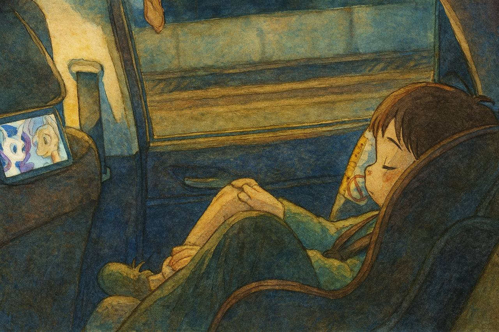

女兒的英文動畫之旅 | 原創，AI翻譯
 來源：chatgpt.com
來源：chatgpt.com
近年我居住在中國廣州。2022年我在天河CBD工作時，有一天前往辦公大樓，將車停靠在附近一個住宅小區的停車位。我看到一位父親用iPad幫兒子按電梯，同時考問他問題。他的兒子用英語回答。那孩子年紀很小，約莫四五歲。當時這一幕讓我印象深刻。
那裡的房價當時價值六百萬或一千萬人民幣，相當昂貴。所以他們算是富裕家庭，而且非常重視孩子的教育。我早就聽說人們努力幫助下一代成功，但這還是我第一次在現實生活中親眼見到。
有一點是，當我二十到二十五歲時，生活中很少見到小孩。但當我自己有了孩子後，才發現孩子無處不在。
由於近年我作為外資銀行的合約員工，英語水平大幅提升，無論在工作或個人學習中都經常使用英語。
我也將英語學習視為女兒的重點教育方向。我女兒於2021年出生。2023年12月，我在微信視頻號發布了一段影片，記錄她邊數手指邊唱《Baby Shark doo doo》和《Finger Family》，還唱了《Happy Birthday to You》。這段影片獲得的點讚和觀看量遠超我平時的內容。
當時她兩歲。我認為她對中國同齡孩子頗具啟發性。
這樣的演唱並不容易。在中國觀看YouTube Kids相當困難，這些網站都被防火長城封鎖。
為此我購買了Apple TV和Fire TV Stick。無法訪問這些平台導致我與父母產生矛盾。父母希望給我女兒看中文動畫，而我更傾向讓她觀看英文動畫。
有時當Apple TV或Fire Stick的VPN代理失效時，我的父母和妻子都無法解決問題。這時如果女兒仍想觀看英文動畫而我剛好不在場，她就會為此哭鬧。
起初我的父母無法理解我的做法。他們認為中文也可以。我知道，但在當今社會競爭太過激烈。她在中國成長，中文自然會掌握。然而英語教育正是她所欠缺的。我花了二十多歲的幾年時間學習這門語言。如果她能在二十歲前達到熟練程度或取得雅思7分，將來在國際企業環境中會表現出色。
我和妻子也經常爭執，她認為我不應該讓女兒過多使用我的備用手機——一部Google Pixel——觀看英文動畫。我覺得這不是問題，因為近視可以逆轉。請參閱我的論文。
改變他人（包括親屬）的觀點確實困難。在見證我女兒的英語進步後，他們開始接受讓她觀看英文動畫。
有人說手機會破壞人們的多巴胺系統，不該讓幼童接觸電子設備。
但我並不認同。英文動畫與英語環境有何區別？英語環境不過是實體化的英文動畫。彩色場景可能刺激大腦，那麼彩色遊樂場呢？
像傑弗里·辛頓和埃隆·馬斯克這樣接觸數字技術超過四十年的人，電子設備會改變他們的大腦嗎？這些只是記錄和分享信息的工具，關鍵在於如何使用。
我們帶女兒旅行時也會讓她觀看英文動畫。我把備用手機固定在座椅頭枕的空隙中，防止滑落。
截至2025年6月，我女兒可能已累積500小時的英文觀看經驗。從2023年4月至今兩年間，平均每天約一小時。雖然她還不會唱更多英文歌曲，我們也沒有刻意要求或練習，但她的腦部無疑已發生巨大變化。
通過英文動畫，她學到了很多。我們不清楚具體內容，但如果詢問她可以描述出來。當我們談論某些話題時，她也能引用動畫中的情節。
試想：如果中國每個孩子都採用這種方式，不到二十年中國就會變得像新加坡一樣。李光耀在半個世紀內將新加坡變成英語國家。
好消息是，儘管防火長城隔絕了中國與全球網絡，但TikTok上流行的英文視頻幾乎都能在微信視頻號或抖音看到，還配有中文字幕。素材非常豐富。
我在新加坡銀行擔任合約員工時，聽說團隊裡有些印度同事在家中和孩子說英語。這讓我非常驚訝。反觀中國，即便是清華北大畢業生也未必有這種習慣或文化。
但我認為在印度部分地區和新加坡，這是自然而平常的事。
我女兒生活在未來。也許有一天所有國家的孩子都會從兩歲開始觀看英文動畫。經過幾代人，到205年，80%的人口都能說英語。
 來源：chatgpt.com
育兒心得
2025年
-
安全至上。低調生活，確保幼兒園或學校處事得當。
-
透過多元體驗和旅行開拓孩子視野。
-
避免強迫孩子做不喜歡的事，減少他們承受的苦難。
-
鼓勵獨立性和決策自由。
-
允許彈性作息安排，特別是當家長生活方式靈活時。
-
培養學習熱忱與好奇心；教授實用技能。
-
教導孩子安全應對危險情境，避免過度保護。
-
裝備實用技能，如使用工具和理解科技原理。
-
培養學習探索中的自信與無畏精神。
-
教導尊重他人與社交禮儀。
-
允許孩子從小自主決策。
-
避免批評；始終鼓勵並給予正面強化。
-
引導接觸現代科技工具，為未來做準備。
-
分享自身經驗與學習成果，並接納孩子的意見與想法。
-
透過觀察孩子學習理解成人與兒童的差異。
-
提供YouTube Kids動畫觀看，以及Apple Arcade和Google Play Pass遊戲。
-
使用YouTube Premium下載英文動畫供車上觀看。
-
從三歲起：教導使用遙控器、玩手機遊戲、透過語音與ChatGPT互動、拆快遞包裹。